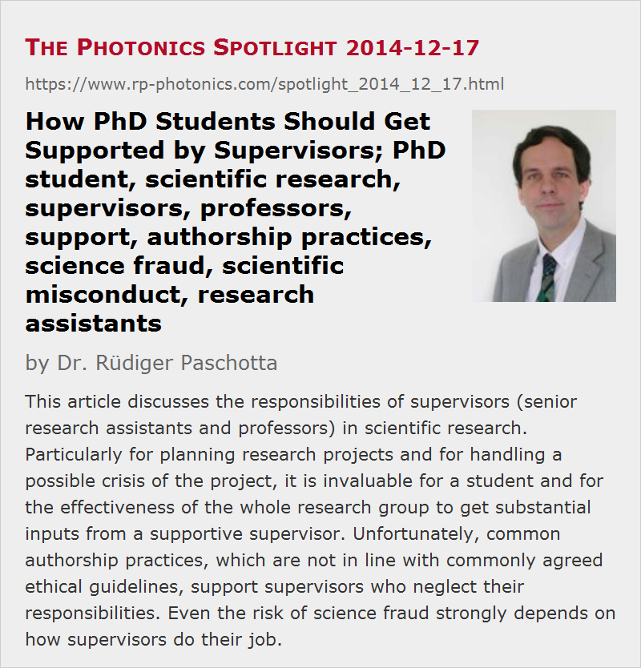

How PhD Students Should Get Supported by Supervisors
Posted on 2014-12-17 as a part of the Photonics Spotlight (available as e-mail newsletter!)
Permanent link: https://www.rp-photonics.com/spotlight_2014_12_17.html
Author: Dr. Rüdiger Paschotta, RP Photonics Consulting GmbH
Abstract: This article discusses the responsibilities of supervisors (senior research assistants and professors) in scientific research. Particularly for planning research projects and for handling a possible crisis of the project, it is invaluable for a student and for the effectiveness of the whole research group to get substantial inputs from a supportive supervisor. Unfortunately, common authorship practices, which are not in line with commonly agreed ethical guidelines, support supervisors who neglect their responsibilities. Even the risk of science fraud strongly depends on how supervisors do their job.

Today I would like to cover a topic which is not specific to photonics, but of general interest for the scientific community. I would like to emphasize at this point already that my article does not only touch the interests of students, but also hot topics like authorship and science fraud. (For some, the topic may even be too hot to share the article with their supervisor!) Hopefully, these thoughts will find some resonance, as I believe that this could result in great benefits not only for the quality of life of many researchers, but also for the quality and effectiveness of scientific research.
In my career as a researcher, I obtained insight into a number of research groups. There, I recognized substantial differences concerning the conditions under which PhD students are working. Some of them are related to the structure of the research group, e.g. whether there are staff members in intermediate positions (e.g. senior research assistants) in addition to a professor as the head of the group. In addition, there appear to be quite different ideas concerning what to expect from PhD students and from their supervisors. Maybe not all of these ideas have resulted from thorough reflections.
What Students Can Do, and What is Difficult
Certainly, PhD students play a vital role in most research groups. They often do the largest part of the laboratory work, like working out detailed plans for experiments, ordering needed equipment or even setting up whole labs, performing much of the experiments and interpreting experimental results. Many of them work quite hard and acquire a rather solid level of scientific and technical competence during these years.
What is really difficult for beginning PhD student is to identify a suitable research project. After all, this requires a substantial knowledge on pre-existing work, a vision of what could and should be accomplished next, and to a realistic appreciation of the possible difficulties to be encountered in a certain project. Even though one rightly expects a PhD student to accomplish substantially more than only thoroughly carrying out a predefined plan, I believe it would normally be far too much to ask from a PhD student to work out the whole plan for his studies himself. Particularly in the early stages, vital inputs from an experienced supervisor are deadly needed.
Even a well planned research project pursued by a good student can get into trouble e.g. if certain unexpected technical difficulties arise or if utterly unexpected findings are made which make the original plan obsolete. A student who is left alone in such a situation without substantial help – or even worse, with additional pressure coming from the boss, can easily get into despair. If this results in the failure of the project, the whole career can be at stake. It can be an invaluable benefit in such a situation to receive competent help and moral support from an experienced supervisor, for whom it is easier to judge a complex situation, to analyze the magnitude of the encountered difficulties and to identify the best way out of the crisis.
Benefits Provided by Supportive Supervisors
I would like to emphasize that a supervisor who sees his task in supporting students will not only avoid serious trouble and a very uncomfortable time for the student, but also contribute greatly to the success of the research group as a whole. He or she will bring important contributions to the productivity of the students' work and will also contribute to the team spirit which makes the research more pleasant for everybody and more productive due to fruitful cooperation, which can arise only on the basis of mutual trust. In the end, everybody will profit from that.
There are group leaders, however, who are too strongly focused on their personal career and seem to feel that they have no resources left for supporting others. Some of these leave students alone in trouble, while others even increase the trouble by mounting additional pressure – sometimes with the doubtful idea that this may lead to harder work by the student which will eventually solve the problem.
The Relation to Authorship Practices
An important question is who really deserves authorship in scientific publications. There is normally no question whether the student, having done most of the work, obtains a prominent position in the list of authors, but whether supervisors are to be listed there as well is a more delicate question. Generally, nobody should be an author who has not brought concrete important contributions to the published work. Amongst those who seriously dealt with this question, there seems to be a widespread consensus that it is absolutely not sufficient for authorship
- to be the leader of a group,
- to have produced the original idea for the project without having worked out any details, or
- to have read the final publication and made a few minor corrections to it.
(For example, see the Proposals for Safeguarding Good Scientific Practice from Deutsche Forschungsgemeinschaft; these guidelines agree well with those from many other scientific institutions.)
Unfortunately, many supervisors (senior research assistants and particularly professors) still believe that they are automatically entitled for authorship on anything being done in their group. They consider it sufficient to have produced some vague ideas or to have paid (of course not with their own money!) for the used infrastructure, for example. Of course, a PhD student is normally not in the position to argue about such points, given the enormous discrepancy of power between him or her and the professor. Unfortunately, at many places there appears to be nobody who would be able and willing to enforce the authorship practices which are theoretically demanded from everyone. I have even experienced a case where most obvious abuse by a professor (demanding the authorship on a whole book chapter without having written a single sentence of it) has been explicitly defended rather than prosecuted by the highest ranks in a highly esteemed research institute. Obviously, these people were being less interested in upholding ethical standards than in avoiding trouble with that professor.
You may ask what that problem has to do with supporting students, the topic of my article. Imagine that justifiable authorship practices would be enforced throughout in universities. As a result, professors (particularly those having large groups) could no more claim authorship in many cases where they did before. This would create an incentive not to set up huge groups without having any time to support the students, but rather to form smaller groups and to actively participate in the research. I believe that this would in the long term lead to a stronger cooperation between the different ranks in a group and that way to more productive and efficient research.
I know that not every senior researcher is able to really bring such valuable contributions as outlined above; in some cases, the students may actually be more happy to be left alone. However, if that were a serious counterargument, one might as well stop employing students on the basis that some of them turn out not to be sufficiently competent.
Supporting Students and Preventing Science Fraud
There is also a relation between the support for students and the prevention of science fraud – but not what many might think! I sometimes read that students would be prevented from forging results if they were under closer control, but I believe that this view is distorted:
The risk for fraud is surely far higher than under normal conditions if a student's project gets into a crisis (as described above) and there is no support available. Even worse, the supervisor may mount additional pressure and in that way make the student feel that the only way out very serious trouble is to produce results somehow – be it with fraud or at least doubtful practices if no other way can be seen. On the other hand, imagine a helpful supervisor, where a student has a very attractive option: just to go there, openly discuss the problems and obtain valuable help for solving the problems. Which student would be crazy enough to forge results rather than to accept valuable help?
After certain scandals became public, I asked myself whether I could rule out the possibility that a student could once have forged results without me noticing it. The answer: I am sure there would have been ways to accomplish that, but I also firmly believe that it never happened – simply because there was never an incentive for a student to do so. While I never treated my students as schoolboys who need to be observed in every moment, I was always prepared to work hard in order to bring really helpful contributions when a project encountered difficulties.
When thinking seriously about these things, I believe one can only come to the conclusion that a large part of the responsibility for providing science fraud is on the side of supervisors. As long as these do their job well, I believe there is a minimal risk of fraud. On the other hand such a risk can become substantial if people are sliding into a situation where fraud appears to be the only way to avoid dire consequences. Just telling students that fraud is evil will certainly not solve the problem – I am sure they all know that.
You may also like to read an article which I wrote five years ago: "Risk factors for scientific fraud and the scientist's responsibility".
This article is a posting of the Photonics Spotlight, authored by Dr. Rüdiger Paschotta. You may link to this page and cite it, because its location is permanent. See also the RP Photonics Encyclopedia.
Note that you can also receive the articles in the form of a newsletter or with an RSS feed.
Questions and Comments from Users
Here you can submit questions and comments. As far as they get accepted by the author, they will appear above this paragraph together with the author’s answer. The author will decide on acceptance based on certain criteria. Essentially, the issue must be of sufficiently broad interest.
Please do not enter personal data here; we would otherwise delete it soon. (See also our privacy declaration.) If you wish to receive personal feedback or consultancy from the author, please contact him e.g. via e-mail.
By submitting the information, you give your consent to the potential publication of your inputs on our website according to our rules. (If you later retract your consent, we will delete those inputs.) As your inputs are first reviewed by the author, they may be published with some delay.
|  |
If you like this page, please share the link with your friends and colleagues, e.g. via social media:
These sharing buttons are implemented in a privacy-friendly way!